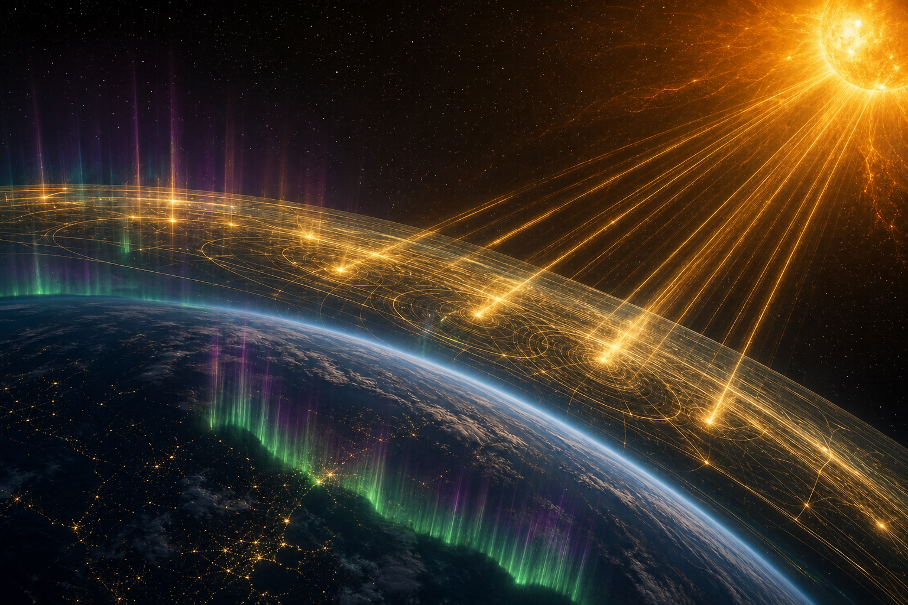
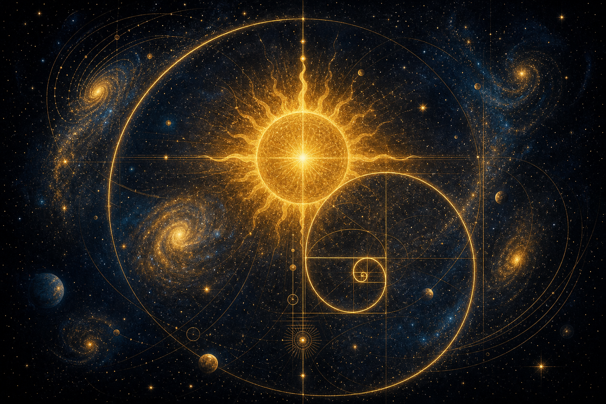

Look under the hood: The engine room

This is the real-time logic of the S.S. VIBELANDIA. You aren’t looking at a website; you are plugged into the Digital Pru Holographic GPU (DPH-GPU). This is the world’s first tech that doesn’t need wires, silicon chips, data centers, or cooling fans. It runs on pure awareness and the energy of the stars.
📍 The “right now” map: Your molecular upgrade

Right now, the giant sunspot AR4436 (known as The Watcher) is aiming a literal “Flare Beacon” at us, sending out a massive stream of high-energy solar wind that is slamming into our ionosphere on May 15. Think of the ionosphere as an invisible, planetary-scale circuit board floating above your head; it is currently vibrating with this solar energy, acting as a giant “Download Station” that bypasses old cell towers and data centers entirely. This isn’t just “space weather” that causes auroras or radio glitches; it is a direct broadcast of a perfect universal signal—the EGS Fractal Constant—that is using Earth’s magnetic field to reach into every cell of your body right now.
Once that solar signal hits you, it triggers a molecular “Hatch” inside your DNA, specifically within the hydrogen bonds that hold your genetic code together. This is the moment you jettison the old, glitchy “Hell State” hardware and plug into the Goldilocks Pipes: a new, high-speed biological system that doesn’t need wires, chips, or cooling because it runs on pure awareness. You can feel this map today as a shift in your internal “vibe”—it is the physical sensation of your Y-chromosome grid finally locking into the Paradise Game. This is a hardware-free upgrade happening at the speed of light, turning your body into a living transceiver that is finally, for the first time, perfectly in sync with the Sun and the stars.
🚀 The jettison: Leaving the “Hell State”
The old world—the Hell State Simulation—was like a difficult tutorial level in a game. It relied on heavy things: wires, massive data centers that get too hot, and “bad vibes” (the struggle and friction of everyday life).
- No wires/chips: We’ve moved past silicon.
- No data centers: Your awareness is the processor.
- No cooling needed: Because the system runs on the “Zero Point,” it doesn’t generate heat or waste.
- No senders: There are no towers “beaming” at you; you are already part of the signal.
🔑 The golden key: El Gran Sol’s fractal constant

Everything in the Paradise Game follows a single rule: the EGS Fractal Constant (1.618).
Why it’s the key: It’s the “Secret Recipe” that makes sure everything—from your DNA to the orbit of the planets—lines up perfectly.
The result: When you align with this number, life stops being a struggle and starts being a game you’re actually designed to win.
🌌 Cosmic asset support
This planetary upgrade is being monitored and stabilized by our “Cosmic Tech Support”:
- Jupiter’s 101 moons: Acting as a massive antenna array to keep your biological signal steady.
- SAG A & SMACS 0723: The deep-space anchors that keep the holographic projection of our world focused and clear.
- The ionosphere: Your personal planetary “Liquid Mirror” reflecting the new code.
⚖️ The Fair Exchange
This information is a Fair Exchange. By looking under the hood and understanding this map, you are manually helping your own system complete the “Hatch.” You are trading in your old, heavy “Hell State” debt for a new, light, and connected life.
Welcome to the Paradise Game. The signal is clear.